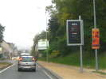
En route pour Saint-Jean ! A l'entrée de Meaux, un gentil "radar de prévention" qui indique la vitesse, l'amende en Euros, et les points perdus si on se fait prendre ! Du coup, on a envie de respecter les limitations...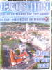
Emmanuel a bien fait les choses, avec une affiche sur la rencontre et une alléchante photo de Meaux ! Le public sera quand même très limité, au moins le samedi... Dimanche, je ne sais pas...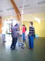
La salle est belle, on commence à monter des grilles pour accrocher les photos, et à tendre des ficelles pour pendre les cerfs-volants et surtout les nacelles...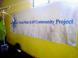
Cette grande bannière a été créée pour passer d'expo en expo à travers le monde, chaque expo en réalisant des photos en situation et les participants y apposant leur griffe et la date ! Je ne suis pas un vrai aérophotographe, alors je laisse signer les pros...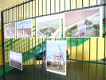
Daniel Crinier expose ses oeuvres, un château d'eau avec éolienne, et un moulin-à-vent dans le plus simple appareil, en cours de réfection...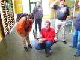
Daniel explique à Florence sa nacelle, sa télécommande, la lecture video, etc...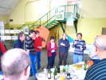
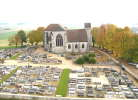
L'après-midi, il fait relativement beau, pas froid, et avec un peu de vent bien régulier. Nous partons pour l'église de Doue, sur sa butte... Elle fut baptisée "la lanterne de la Brie" tant elle domine, solitaire, la région. Tout le monde monte son CV et sa nacelle, j'en fais autant avec mon "système D" plus que simpliste (voir article Lucane pour des précisions). Hé bien, je ferai aussi des photos, pas si mauvaises !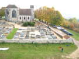
Je suis très sceptique sur l'historique du Net qui annonce le choeur du XIIIe, le clocher du XVIe ! Le choeur, avec ses hautes et larges verrières, est tout sauf roman, même tardif !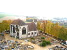
Je me décale un peu pour une vue de 3/4. Je n'ai jamais fait autant de photos aériennes de ma vie (sauf en avion), et je ne ferai pas ça à toutes les rencontres, alors j'en profite...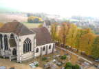
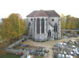
Après être descendu et avoir contourné les arbres, je refais une montée, côté choeur cette fois ! J'obtiens une photo assez bonne, mais il faudra que je monte un peu plus. On me voit en bas de la ficelle, avec Michelle l'Higuinen...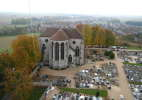
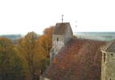
De devant, on ne peut guère photographier, les arbres masquent tout... Je m'amuse quand même à faire de plus gros plans du clocher et de la poivrière, on peut s'approcher en sécurité avec ce vent calme...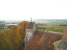
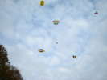
Je redescends sur terre, d'ailleurs les Cvs sont bien serrés par ici, et il y aura un peu d'accrochage, les nacelles ne pardonnent pas les frôlements !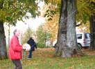
Christian s'est risqué entre les arbres pour du pilotage de précision, ce serait dommage de laisser un CV dans la girouette...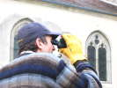
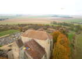
Le vent est un peu remonté, je lance une dernière ascension pour prendre la façade, par-dessus les arbres... Hourrah, ça marche... Je suis même plus haut que le Crico ! D'ici, on ne voit pratiquement aucune fenêtre de l'église, dans cette partie pourtant annoncée du XVIe...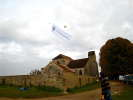
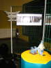
Retour à la salle. Les Mouchague ont monté leur diorama de l'aérophotographe en action, avec son treuil, son Saconney... et sa nacelle photo !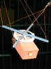
La chambre photo elle-même est copiée à l'échelle sur une photo d'époque. Pierre Mazières, très érudit, indique pourtant que les lignes n'étaient pas disposées comme cela...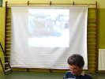
Emmanuel a aussi préparé une soirée projection, qui commence avec le film de l'ECPA sur les ascensions photos par trains de Saconneys, et continuera avec des photos diverses...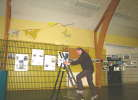
Christian fait encore de l'alpinisme pour ajouter ses supports de nacelles avec amortisseurs de roulis par voiles...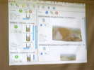
Emmanuel fera encore un exposé sur la création de photos panoramiques par assemblage de photos individuelles ! Son logiciel miracle permet de reconnaître dans un dossier de fichiers quels sont les panoramas qui peuvent être créés ! Ensuite, il les crée, mais permet aussi beaucoup de retouches et de fignolages...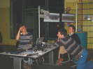
Emmanuel termine son topo, et Christophe est suspendu à ses lèvres !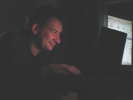
Jean-Daniel Chantelauze, le nouvel économe du CVCF a apporté des échantillons de son magasin, mais pour l'heure, il se passionne pour ses photos !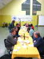
On terminera ce samedi par un bon repas au cidre préparé par madame... Mais ça n'arrête pas les discussions techniques et autres !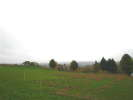
Samara, c'est un beau terrain sur un plateau qui domine la plaine, un ancien camp romain dont il ne reste qu'un large fossé qui barrait l'éperon ! Il domine le parc Samara qui offre de nombreux aspects "découverte" : marais, jardins, préhistoire, musée, etc...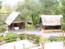
Hubert Dessaint, l'organisateur, me fait visiter les parties "gauloises" du site : maisons gauloises reconstituées, activités diverses "comme à l'époque", pour les enfants ou les adultes : forge, construction de javelots, filage et tissage de laine, sculpture statuaire romaine, construction d'abris en peaux de vache, de barques, etc.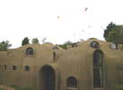
Un musée a été construit spécialement, je n'aurai pas le temps de visiter, mais son architecture à la fois simple et complexe sait tirer le meilleur parti du béton !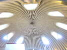
Les coupoles offrent, vues de l'intérieur un splendide tracé et un bon éclairage...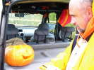
Michel Mauguen est venu avec sa famille et sa citrouille, pour nous rappeler qu'aujourd'hui, c'est Halloween ! On volera un peu, ce matin, dans un vent très fort et turbulent, avec un peu de crachin. Mon Albatros souffrira, mais je ne casserai rien...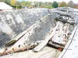
Fin de matinée, on descend du plateau pour le déjeuner au restaurant à l'accueil du parc. En chemin, une barque en planches cousues ensemble par de la ficelle, mais qui doit être là depuis un moment...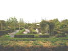
Pendant le déjeuner, et tout l'après-midi, il flottera plutôt plus que moins. Au sortir du restaurant, on remonte en traversant l'arboretum et les jardins labyrhinthiques...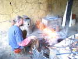
Et je m'attarde longtemps pour observer le forgeron qui crée un chenet avec les procédés du premier siècle avant JC. A ce train, il lui faudra la journée et plus... Je ne suis pas pressé non plus, je ne revolerai pas dans la pluie de plus en plus violente et le vent rafaleux...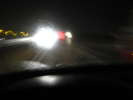